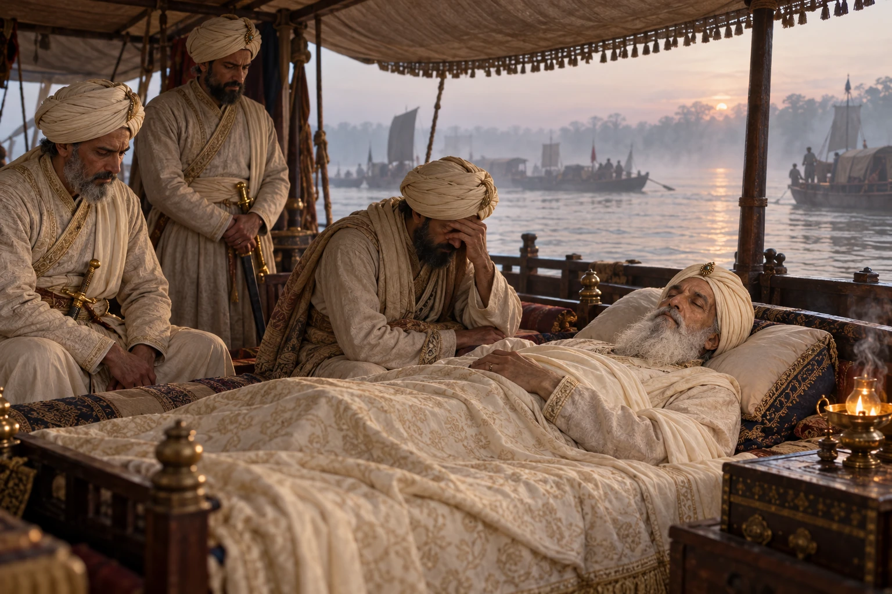

Death of Mir Jumla on the Return March
March 1663 · Against the Mughal Empire

Sick since the monsoon at Garhgaon, Mir Jumla dies on the way back to Dhaka soon after the Treaty of Ghilajharighat.
Deathbed composition is illustrative, not an eyewitness record.
People: Mir Jumla, Dilir Khan
Open this scene in the interactive archive · Follow this event on MAP